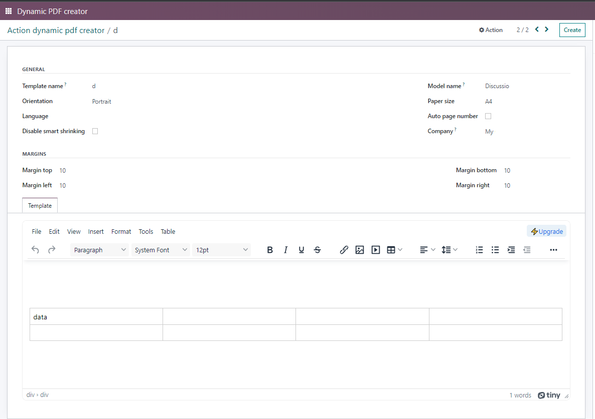

<section class="oe_container oe_dark">
  <div class="oe_row">
    <div class="oe_span12" style="width: 90%">
      <h2 class="oe_slogan">Odoo 16 Web Tinymce Editor</h2>
      <h3 class="oe_slogan">
        Web tinymce editor module allow user to access odoo html field
        functionality as well as extra more features.
      </h3>
      <h4 class="oe_slogan">How to use</h4>
      <div class="oe_screenshot" style="text-align: left">
        <ul>
          <li style="color: #30054d; font-weight: bold">
            As per below image, we can see new editor which is define using
            simple html field or also we can define as a widget 'html'.
          </li>
        </ul>
        <br />
      </div>
      <br />
      <br />
      <div class="oe_screenshot" style="text-align: left">
        <ul>
          <li style="color: #30054d; font-weight: bold">
            Insert these codes into the view of your module to get changes on
            the template as you edit
          </li>
        </ul>
        <br />
      </div>
    </div>
  </div>
</section>
